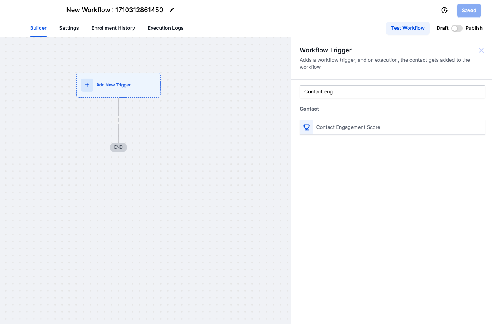
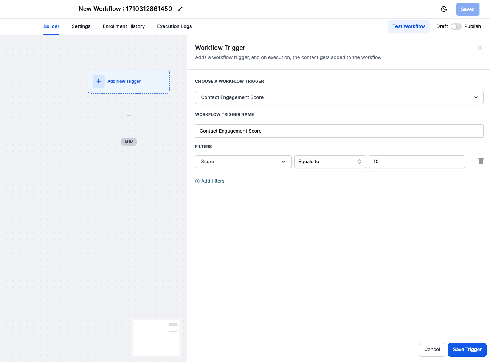
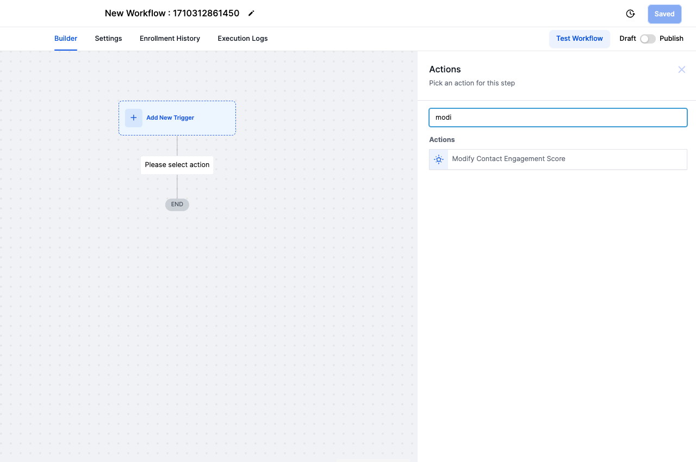
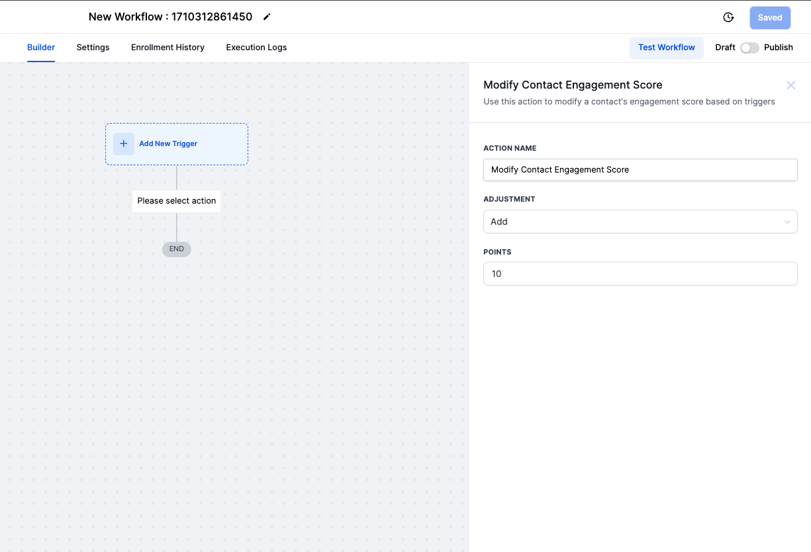

Enhance your customer engagement strategies with our new workflow features. Utilise triggers based on changes in Contact Engagement Scores and actions to adjust these scores directly.
TABLE OF CONTENTS
Contact Engagement Score Trigger
The Contact Engagement Score Trigger enables the automation of workflow actions in response to updates in a contact's Engagement Score. This feature is designed to help users efficiently manage and respond to their contacts' engagement levels.
Key Features:
- Automated Activation: Automatically trigger workflow actions based on changes in Engagement Scores.
- Customizable Filters: Apply filters to trigger workflows based on specific numerical conditions of the Engagement Score.
Available conditions include:
- Equal to a score
- Not equal to a score
- Greater than a score
- Greater than or equal to a score
- Less than a score
- Less than or equal to a score
- Is empty
- Is not empty
These conditions can be used to precisely define when the workflow is triggered, based on the contact engagement score.


Modify Contact Engagement Score Action
With the "Modify Contact Engagement Score" action, users have the capability to directly influence a contact's Engagement Score. This action allows for the addition or subtraction of points from the existing score, offering a flexible approach to engagement management.
How It Works:
- Adjust Engagement Scores: Add or subtract points to fine-tune a contact's Engagement Score.
- Flexible Engagement Management: React to engagement changes dynamically by modifying scores as needed.


Use-cases:
- Segmentation for Targeted Campaigns: Triggering workflows to segment contacts into different marketing campaigns based on their engagement score thresholds.
- Automated Follow-up: Initiating a follow-up sequence when a contact's engagement score drops below a certain point, indicating they may be losing interest.
- Rewarding Engaged Contacts: Automatically sending rewards or exclusive offers to contacts whose engagement scores reach a high threshold, encouraging further interaction.
- Data Cleaning: Identifying contacts with an "empty" engagement score as potentially inactive or unengaged, prompting a review or removal from active campaigns to focus resources on engaged contacts.